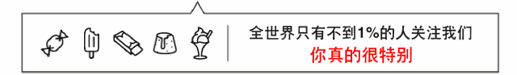

最近，公司因为智慧消防项目推出智能充电桩的项目，马上要进行充电桩设备管理系统的研发，拟使用微信二维码来实现这个收款，所以整理了一下微信支付和支付宝支付技术。
JSAPI网页支付即前文说的公众号支付，可在微信公众号、朋友圈、聊天会话中点击页面链接，或者用微信“扫一扫”扫描页面地址二维码在微信中打开商户HTML5页面，在页面内下单完成支付。
Native原生支付即前文说的扫码支付，商户根据微信支付协议格式生成的二维码，用户通过微信“扫一扫”扫描二维码后即进入付款确认界面，输入密码即完成支付。
微信支付系统是指完成微信支付流程中涉及的API接口、后台业务处理系统、账务系统、回调通知等系统的总称。微信支付分为公众号支付，App支付，扫码支付（包括PC 网站），刷卡支付（设备扫描用户手机）
接通扫码支付流程：

步骤1：商户根据微信支付的规则，为不同商品生成不同的二维码，展示在各种场景，用于用户扫描购买。
步骤2：用户使用微信“扫一扫”扫描二维码后，获取商品支付信息，引导用户完成支付。
步骤3：用户确认支付，输入支付密码。
步骤4：支付完成后会提示用户支付成功，商户后台得到支付成功的通知，然后进行发货处理。
商户后台系统根据微信支付规则链接生成二维码，链接中带固定参数productid（可定义为产品标识或订单号）。用户扫码后，微信支付系统将productid和用户唯一标识(openid)回调商户后台系统(需要设置支付回调URL)，商户后台系统根据productid生成支付交易，最后微信支付系统发起用户支付流程。
商户支付回调URL设置指引：进入公众平台-->微信支付-->开发配置-->扫码支付-->修改

5、申请商户功能，在我的服务里面找商户功能，填写三部分资料，如图

注册前需要准备：影印件必须为彩色原件的扫描件或数码照，营业执照影印件，对公银行账户等资料。

网银支付收款产品准入条件
（1）您申请前必须拥有企业支付宝账号（不含个体工商户），且已通过支付宝实名认证审核；注册支付宝企业账户；
（2）您必须有已建设完成的网站（非淘宝、天猫、诚信通网店、团购类网站），且已通过ICP备案，备案信息与签约商户信息一致，网站经营的商品或服务内容明确、完整；
（3）您已成功签约支付宝即时到账产品，且是非团购类商家；
（4）实物类交易网站或符合条件的虚拟类交易网站

接入方式
根据支付宝接口，在申请通过审核后，获取相应的商户码和key，在支付页面展示相应的链接。用户点击该支付链接后，进入支付宝支付页面。支付完成后，进入网站支付完成页面。
在签约管理里可以下载技术集成文档，申请相应的apid和key。

（1）获取appid
签约产品后，开发者登录开放平台-管理中心-我的应用，选择需要查看APPID的应用点击“查看”， 即可看到本应用的APPID值，如下图。

（2）成key
直接运行“支付宝RAS密钥生成器SHAwithRSA1024_V1.0.bat”或者
“SHAwithRSA1024_V1.0.command”，点击生成RSA密钥，会自动生成公私钥，然后点击“打开文件位置”，即可找到工具自动生成的密钥。
或使用OpenSSL工具命令生成：
首先进入OpenSSL工具，再输入以下命令。
OpenSSL> genrsa -out rsa_private_key.pem 1024 #生成私钥OpenSSL> pkcs8 -topk8 -inform PEM -in rsa_private_key.pem -outform PEM -nocrypt -out rsa_private_key_pkcs8.pem #Java开发者需要将私钥转换成PKCS8格式OpenSSL> rsa -in rsa_private_key.pem -pubout -out rsa_public_key.pem #生成公钥OpenSSL> exit #退出OpenSSL程序
经过以上步骤，开发者可以在当前文件夹中（OpenSSL运行文件夹），看到rsa_private_key.pem（RSA私钥）、rsa_private_key_pkcs8.pem（pkcs8格式RSA私钥）和rsa_public_key.pem（对应RSA公钥）3个文件。开发者将私钥保留，将公钥提交给支付宝网关，用于验证签名。以下为私钥文件和公钥文件示例。
（3）上传公钥&获取支付宝公钥
1. 开发者登录开放平台-管理中心-我的应用，选择需要上传公钥的应用点击“查看”，点击“应用环境”：
2. 点击“设置应用公钥”，将公钥文件去除头尾、换行和空格，仅需填入字符串。
1.获取SDK
2.配置公私钥、公共请求参数
3.接口调用示例
4.获取SDK
开放平台SDK主要支持JAVA（SDK1.5、SDK1.4）、.NET、PHP 3种语言。
接口调用示例大致分为3步：
①拼装业务参数
②将参数发送给开放平台服务端
③获取开放平台服务端返回值，并进行具体业务处理